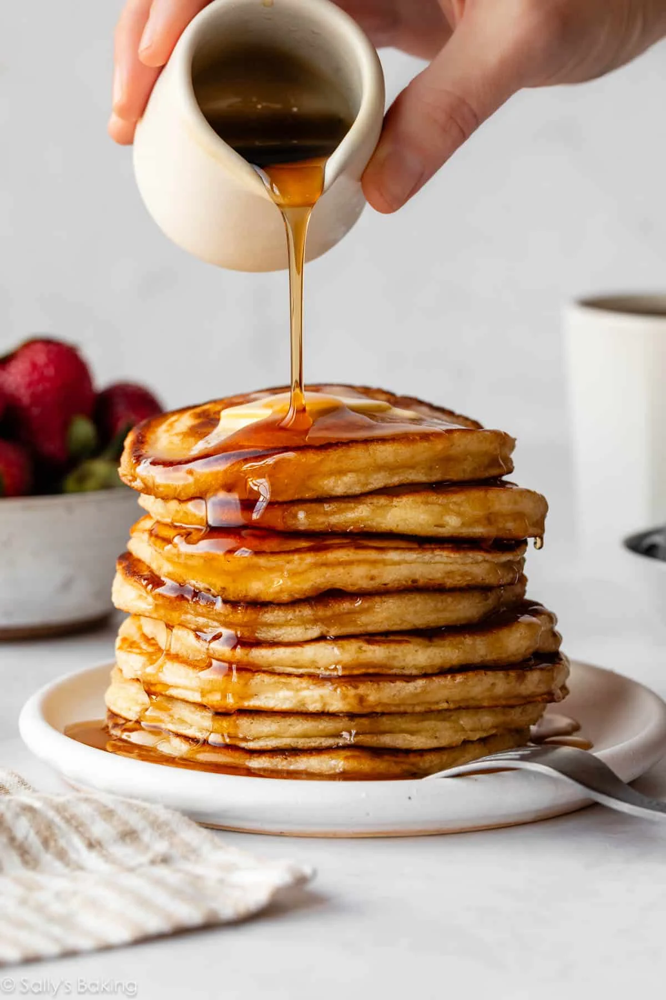
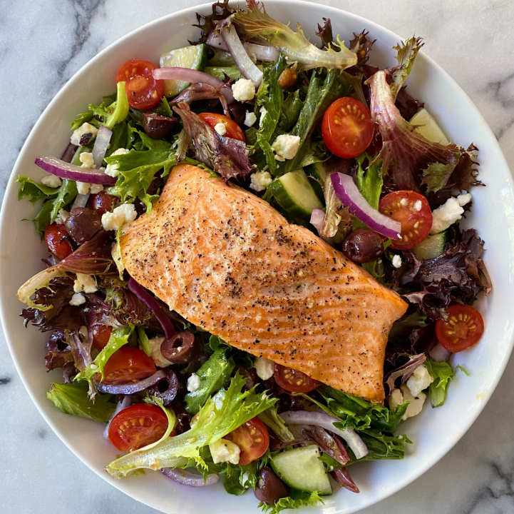

Recipes
Breakfast: Pancakes

Ingredients
- 1 ½ cups all-purpose flour
- 3 ½ teaspoons baking powder
- 1 ¼ cups milk
- 3 tablespoons butter, melted
- 1 large egg
Instructions
- Scoop or pour the batter into the pan to take up about 80% of the pan.
- Cook until the batter on top has solidified into bubbles and flip.
Toppings
- Enjoy with maple syrup, whipped cream, fruit, etc.
Lunch: Salmon and Salad

Ingredients
- 10 to 12 oz cooked salmon or 2 cans drained salmon
- Chopped celery, red onion, and green onions
- Fresh dill or parsley
- Dressing: mayo or Greek yogurt + lemon juice + Dijon mustard
Instructions
- Bake salmon at 400°F for 8 to 12 minutes until flaky, or use canned salmon.
- Whisk lemon juice, mustard, and mayo/yogurt.
- Mix salmon, vegetables, and herbs into the dressing.
- Serve on bread, lettuce wraps, or greens.
Toppings
- Croutons, balsamic vinegar, etc.
Dinner: Steak and Mashed Potatoes

Ingredients
- 4 medium potatoes (peeled and cubed)
- 6 tbsp butter
- 1/2 cup milk or cream
- Salt and pepper
- 1 lb sirloin or ribeye steak (cut into cubes)
- Olive oil
- 3 cloves minced garlic
Instructions
Potatoes
- Boil potatoes 15 minutes until soft.
- Drain, add butter/milk/salt/pepper, mash until smooth.
Steak
- Season steak with salt, pepper, garlic powder.
- Sear in hot oil for 2 to 3 minutes.
- Add butter + garlic, stir for 30 seconds.
Toppings
- Gravy, salad, etc.